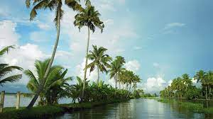

Alappuzha

Alappuzha, also known as Alleppey, is a district in the southern Indian state of Kerala. It is known for its network of canals and lagoons, which are a part of the Vembanad Lake. Alappuzha is also known for its backwater tourism, houseboat cruises, and beach resorts. It is a popular destination for tourists seeking a relaxing and scenic getaway.
Some of the popular tourist attractions in Alappuzha include:
- Alappuzha Beach
- Kuttanad Backwaters
- Nehru Trophy Boat Race
- Mullakkal Rajeshwari Temple
- St. Mary's Syro-Malabar Catholic Forane Church
